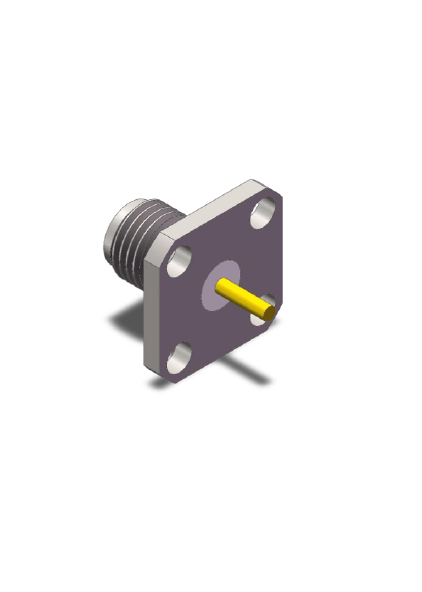
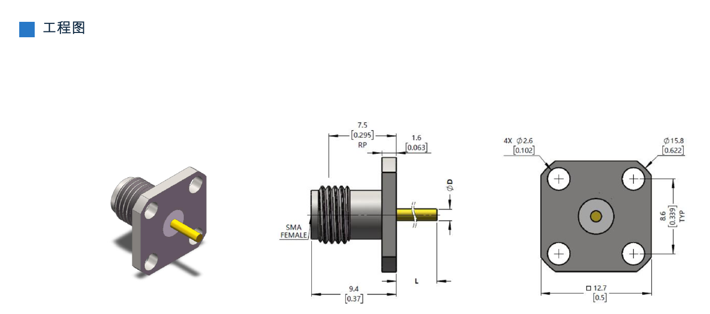

接口类型 Interface
SMA Female
RF CONNECTOR / PRODUCT SPECIFICATION
RF Connector / 射频连接器
SMA Female 射频连接器，型号 NYSAFD50F01-098。
供应商：深圳市芯诚凯富有限公司

CORE SPECIFICATIONS
接口类型 Interface
SMA Female
频率 Frequency
DC to 40 GHz
驻波比 VSWR
≤ 1.15
阻抗 Impedance
50 Ω
耐久性 Durability
≥500 Mating Cycles
工作温度 Operating Temperature
-55°C to +165°C
TECHNICAL SPECIFICATIONS
| 参数 Parameter | 规格 Specification |
|---|---|
| 电气与环境参数 | |
| 接口类型 Interface | SMA Female |
| 频率 Frequency | DC to 40 GHz |
| 驻波比 VSWR | ≤ 1.15 |
| 阻抗 Impedance | 50 Ω |
| 耐久性 Durability | ≥500 Mating Cycles |
| 工作温度 Operating Temperature | -55°C to +165°C |
| 材料与表面处理 | |
| 壳体 Housing | SUS303 Stainless Steel |
| 接触件 Contact | BeCu C17300, Gold Plated |
| 绝缘体 Insulator | ULTEM |
| 机械尺寸 | |
| 中心针直径 D | 1.27 mm [0.050 in] |
| 中心针伸出长度 L | 2.50 mm [0.098 in] |
DIMENSIONS

CONTACT
源资料未提供公开联系方式，请通过现有业务渠道联系。